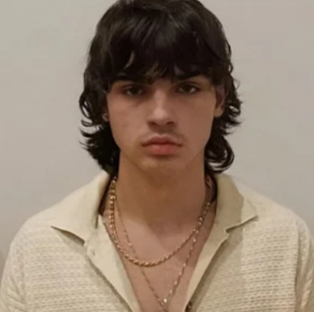

Carbone Angelo
Carbone Angelo (alias «Le Duke», también conocido como Arès) es un fugitivo francés buscado por la Policía Nacional de Francia, sospechado de múltiples crímenes violentos y de coordinación dentro de redes criminales en Córcega.
|  | |
| Nombre completo | Carbone Angelo |
|---|---|
| Alias | Le Duke, Arès |
| Nacimiento | Ajaccio (Córcega, Francia) |
| Edad | No confirmada (17–18 años en 2018) |
| Altura | 1,70 – 1,75 m |
| Complexión | Media |
| Cabello | Castaño |
| Ojos | Marrón |
| Nacionalidad | Francesa |
Actividad criminal
Carbone Angelo está sospechado de participar en un red criminal de origen corso, con operaciones violentas en Ajaccio y Bastia. Según reportes policiales, habría ejercido funciones de coordinación dentro de grupos armados vinculados a homicidios, tráfico de estupefacientes y contrabando.
Cargos principales:
- Tráfico de estupefacientes
- Posesión ilegal de armas de fuego
- Homicidio voluntario
- Extorsión y contrabando
Fuga
En julio de 2018, Carbone Angelo logró escapar durante una operación policial en Córcega, después de un enfrentamiento en el que un agente de la Policía Nacional resultó muerto. Se sospecha que huyó hacia España, aunque su paradero exacto permanece desconocido.
Última localización y hábitos
Se cree que Carbone Angelo podría desplazarse entre áreas urbanas y rurales próximas a la frontera, con apoyo de una red local que le ayuda a evadir la captura. Las autoridades recomiendan extrema precaución.
Recompensa y contacto
El Ministerio del Interior ofrece una recompensa de hasta 500 000 € por información fiable que conduzca a su arresto.
Contacto público:
- Número de urgencia: 17 (Francia)
- Línea directa Policía Judicial: 0 800 00 12 12
Advertencia
Las autoridades consideran a Carbone Angelo armado y extremadamente peligroso. Se desaconseja todo intento de captura por parte de civiles, y cualquier información debe comunicarse inmediatamente a la Policía Nacional.